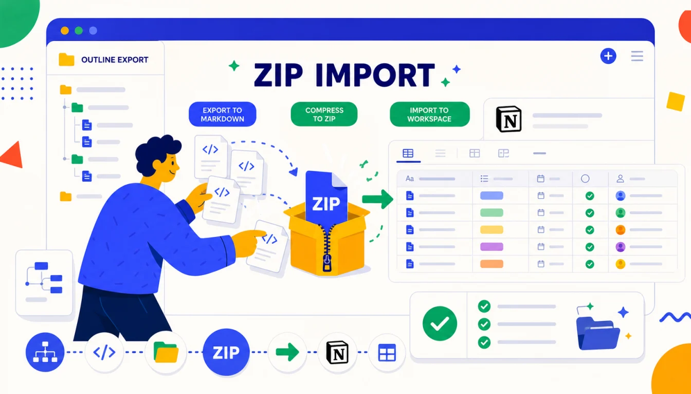

幕布迁移到 Notion，推荐路径是“幕布 → Markdown → Notion”。如果只是把内容搬过去，可以在 Notion 中多选 .md 文件导入；如果希望尽量保留幕布原来的文件夹结构，先把导出的 Markdown 文件夹压缩成 ZIP，再用 Notion 导入。
需要提前说清楚：这不是“无损复刻幕布”。Markdown 能很好地承载文本、标题、列表、备注引用和链接，但不能自动保留幕布的思维导图视图、协作权限、评论历史，也不会自动生成 Notion 数据库属性。
快速答案：用 Mubu Exporter 批量导出 Markdown；导出后如果需要目录结构，把整个 Markdown 文件夹手动压缩为 ZIP；在 Notion 的 Import 中选择 Text & Markdown 或 ZIP 导入；完成后抽查备注、图片和深层列表；最后把重要页面放入数据库，用属性和视图重新组织。

为什么 Notion 迁移不能只看“能不能导入”？
Notion 和幕布的组织方式不同。幕布强在大纲编辑，适合快速拆解想法；Notion 强在页面、数据库、看板和团队协作。迁移时真正重要的是把内容变成 Notion 未来能继续管理的形态。
所以这篇教程分两层：第一层是把幕布笔记批量变成 Notion 页面；第二层是把这些页面整理进数据库、标签和视图里。只完成第一层，后面会得到一堆页面；做完第二层，才算真正进入 Notion 工作流。
迁移前先看格式映射
| 幕布内容 | Markdown 导出后 | 导入 Notion 后 | 注意事项 |
|---|---|---|---|
| 文档标题 | .md 文件名 | Notion 页面标题 | 重名标题可能需要手动区分 |
| 大纲节点 | 缩进列表或标题 | 列表、标题块 | 深层缩进要抽查 |
| 备注 | > 引用块 | 引用类内容 | 视觉样式与幕布不同 |
| 图片 | Markdown 图片链接 | 可能显示为图片或链接 | 不要假设外链会永久可访问 |
| 文件夹 | 本地目录结构 | ZIP 导入时更容易保留 | 普通多选文件不会自动复刻目录 |
| 权限/评论 | 不在 Markdown 中 | 不会自动迁移 | 需要在 Notion 重新设置 |
第一步：批量导出幕布 Markdown
- 用桌面 Chrome 打开 mubu.com，确认已经登录。
- 打开「幕布导出工具」，点击「获取文件信息」。
- 确认扫描出的文档数量和文件夹数量大致符合预期。
- 导出格式选择 Markdown (.md)。
- 下载子文件夹建议使用
MubuBackup/2026-07/Markdown。 - 点击「开始导出」，完成后处理失败项重试。
Mubu Exporter 会按幕布原有文件夹路径保存文件。它不会直接生成 ZIP；你会先得到一个本地文件夹。关于 Markdown 转换规则，可以看幕布导出 Markdown 完整指南。
建议同一批迁移再导出一份 JSON。JSON 不是给 Notion 直接导入的格式，而是用来兜底：如果以后发现某些内容需要重新转换，可以回到更接近幕布原始结构的数据。
第二步：决定 Notion 导入方式
根据 Notion 官方导入文档，Notion 支持导入文本和 Markdown。实际操作时，你有两种路线：
| 导入方式 | 适合场景 | 优点 | 缺点 |
|---|---|---|---|
| 多选 Markdown 文件 | 几十篇以内，不太在意原目录 | 简单直接，容易排查失败文件 | 目录结构需要导入后手动整理 |
| 压缩 ZIP 后导入 | 想尽量保留文件夹结构 | 更适合大量文档和多层目录 | ZIP 过大或文件过多时更难排错 |
我的建议是：先用 5 篇样本文档多选导入，确认格式没问题；正式迁移时，如果你的幕布目录很重要，再使用 ZIP 路线。
第三步：用 ZIP 尽量保留文件夹结构
如果你选择 ZIP 路线，关键不是“把一堆文件压缩起来”，而是“压缩整个导出文件夹”。例如：
MubuBackup/2026-07/Markdown/
工作/
项目A.md
项目B.md
读书/
原子习惯.md
认知觉醒.md
会议/
周会纪要.md
你应该压缩 Markdown 这个文件夹，而不是只选中里面的散文件。这样 Notion 导入时更容易识别原来的目录关系。
在 macOS 上，如果 ZIP 导入失败，可以先删除隐藏文件，例如 .DS_Store。文件很多时，不要把全部内容塞进一个巨大 ZIP，可以按「工作」「读书」「会议」分成多个 ZIP 导入。
第四步：在 Notion 中导入
- 打开目标 Notion Workspace。
- 选择你希望放置迁移内容的页面或 Teamspace。
- 点击 Import，选择 Text & Markdown，或选择 ZIP 文件导入。
- 等待 Notion 处理完成。
- 导入后先不要移动页面，先抽查格式。
如果导入文件数量很多，建议分批进行。遇到导入失败时，优先拆小批次、缩短文件名、删除隐藏文件、减少单个 ZIP 中的文件数量。
第五步：迁移后的格式验收
迁移完成后，至少抽查 10 篇不同类型的文档：
- 一篇层级很深的幕布大纲，检查列表缩进是否正常。
- 一篇备注很多的笔记，检查引用块是否完整。
- 一篇含图片的笔记，检查图片是否可见或链接是否可打开。
- 一篇含外部链接的笔记，检查链接是否保留。
- 一篇标题含特殊符号的笔记，检查页面标题是否异常。
| 问题 | 常见原因 | 处理方式 |
|---|---|---|
| 页面数量少于预期 | 部分文件导入失败或 ZIP 结构异常 | 拆小批次重新导入，并对照本地文件列表 |
| 图片不显示 | 外链不可访问或导入时未抓取 | 手动上传关键图片，或保留 HTML 备份对照 |
| 列表层级变浅 | Markdown 深层缩进兼容差异 | 只修复关键文档，不建议全量手改 |
| 备注样式不符合预期 | 引用块视觉与幕布备注不同 | 重要备注可改成 Callout 或正文小节 |
| 数据库没有属性 | Markdown 导入不会自动生成数据库字段 | 导入后手动归入数据库并补属性 |
第六步：用 Notion 数据库整理迁移内容
导入后的 Notion 页面只是“搬进来了”。如果你的目标是长期管理，建议新建一个「幕布迁移资料库」数据库，把导入页面逐步纳入。
推荐属性如下：
| 属性 | 类型 | 用途 |
|---|---|---|
| 原文件夹 | Select / Multi-select | 记录来自幕布的哪个目录 |
| 内容类型 | Select | 读书笔记、会议纪要、项目复盘、资料归档 |
| 迁移批次 | Date / Select | 例如 2026-07，全量迁移后便于追踪 |
| 检查状态 | Status | 未检查、已检查、需修复 |
| 图片状态 | Select | 无图片、外链正常、需补传 |
| 原始备份 | URL / Text | 记录本地备份目录或归档位置 |
Notion 数据库的价值在于多视图管理。你可以用表格视图做验收，用看板视图按状态推进整理，用 Gallery 视图管理读书笔记，用日历视图管理会议和项目复盘。
第七步：迁移后的权限和协作处理
幕布里的协作关系不会跟随 Markdown 进入 Notion。导入后需要在 Notion 侧重新处理：
- 个人资料：先放在 Private 区域，整理后再分享。
- 团队资料：导入到指定 Teamspace，并确认成员权限。
- 项目归档：建议只给阅读权限，避免历史资料被误改。
- 敏感文档：迁移前先确认是否应该进入 Notion，避免把个人资料误放进团队空间。
如果你迁移的是协作文档，还可以参考幕布协作文档备份前的权限检查清单。
常见问题
幕布能直接导入 Notion 吗？
不能直接一键互通。推荐先把幕布批量导出为 Markdown，再通过 Notion 的导入功能导入。JSON 可以作为备份，但通常不是 Notion 直接导入的主格式。
多选 Markdown 和 ZIP 导入怎么选？
不需要目录结构时，多选 .md 文件更简单；想尽量保留幕布文件夹结构时，压缩整个 Markdown 导出文件夹，再导入 ZIP。
Mubu Exporter 会自动生成 ZIP 吗？
不会。它会按幕布文件夹结构保存到本地下载目录。ZIP 是导出完成后你自己把整个文件夹压缩出来的中间包。
备注和图片会丢吗？
备注会导出为 Markdown 引用块。图片会以 Markdown 图片链接形式保留，但外链能否长期访问需要迁移后验收。重要图片建议手动补传到 Notion 或保留 HTML/JSON 备份。
导入后会自动变成 Notion 数据库吗？
不会。Markdown/ZIP 导入主要生成页面。数据库属性、标签、状态、视图都需要导入后手动整理。
总结：Markdown 搬内容，ZIP 保目录，数据库做管理
幕布迁移 Notion 的核心不是找一个神奇按钮，而是把三件事分开：Markdown 负责内容迁移，ZIP 负责尽量保留文件夹结构，Notion 数据库负责后续管理。只要顺序正确，这件事并不复杂。
迁移完成后，不要马上删除幕布原文档。至少等 Notion 页面数、关键图片、备注和权限都验收完成，再决定是否清理旧资料。
相关链接：